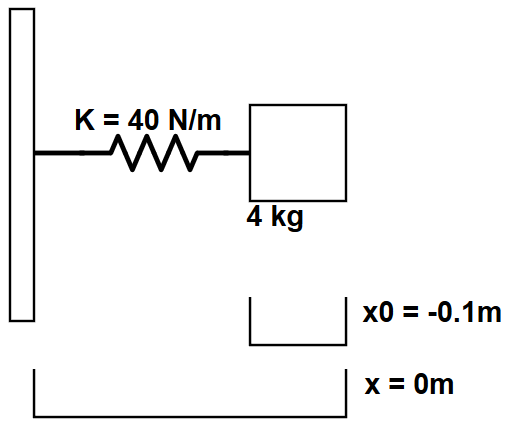

An ideal one-dimensional mass-spring system contains a mass (m) connected to a Hooke's Law spring with spring constant k. This script utilizes Euler's method to simulate the position and velocity of the mass given initial conditions. A diagram of this system is shown below:
This simulation describes the motion of the system when released from an initial compression.
The initial position of the mass for this simulation is a compression of 0.1 m.
The mass is released from rest, so the initial velocity is 0 m/s.
The output of the simulation is displayed in position-time and velocity-time charts below:
The Matlab script to perform this calculation is available below: